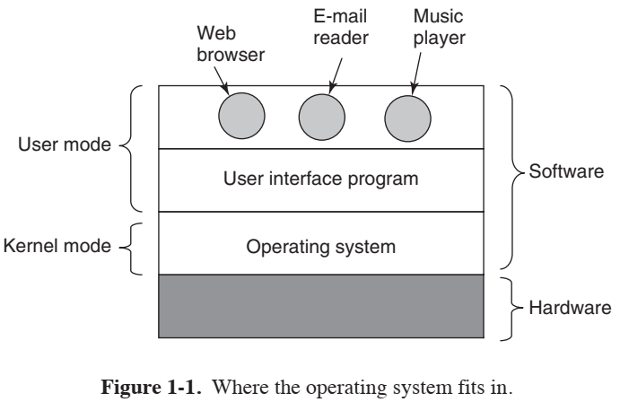
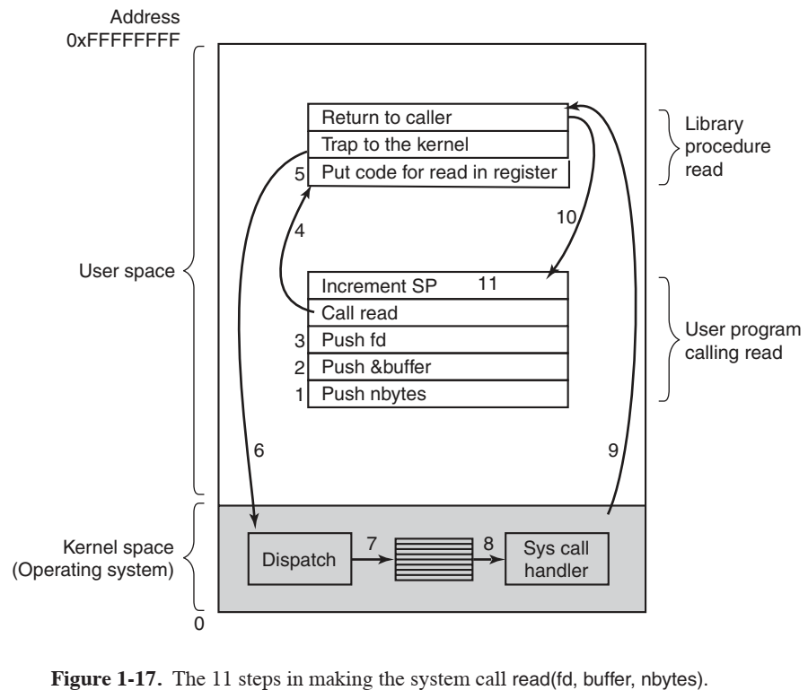
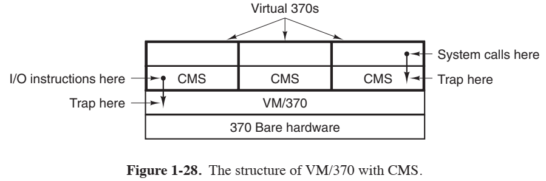
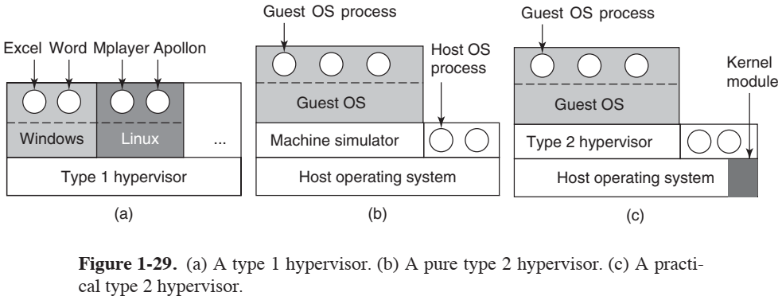

操作系统是软件，实现了用户与硬件的交互。
与用户交互的程序有两种：
- 一种是基于文本的交互程序，称作**外壳**（shell）；
- 一种是基于图形的交互程序，称作**图形用户界面**（Graphical User Iterface，GUI）。
以上两种程序都不是操作系统的一部分，但是它们都依赖于操作系统而运作。他们的关系如下图所示。

从上面这幅图还可以看到计算机的两种运行模式：**内核态（kernel mode）和用户态**（user mode）。
内核态：
- 别名：**管态、核心态**；
- 权限：具有对所有硬件的完全访问权，可以执行机器能够运行的任何指令；
用户态：
- 权限：只能使用机器指令中的一个子集。所以，那些会影响机器的控制的指令在用户态的程序中是禁止的。
1.1 WHAT IS AN OPERATING SYSTEM?
1.1.1 The Operating System as an Extended Machine
1.1.2 The Operating System as a Resource Manager
1.2 HISTORY OF OPERATING SYSTEMS
1.2.1 The First Generation (1945-55): Vacuum Tubes
1.2.2 The Second Generation (1955-65): Transistors and Batch Systems
1.2.3 The Third Generation (1965-1980): ICs and Multiprogramming
UNIX 的诞生和开源，使得多个机构发展了自己的、互不兼容的 UNIX 版本，导致混乱。为了使编写的程序能够在任何版本的 UNIX 上运行，IEEE 提出了一个 UNIX 的标准，称作 POSIX。目前大多数 UNIX 版本都支持 POSIX。
1.2.4 The Fourth Generation (1980-Present): Personal Computers
1.2.5 The Fifth Generation (1990-Present): Mobile Computers
1.3 COMPUTER HARDWARE REVIEW
1.3.1 Processors
系统调用
如果要得到操作系统的服务，用户程序必须使用系统调用（system call）以陷入内核并调用操作系统。
TRAP 指令把计算机从用户态切换成内核态，并启用操作系统。当有关工作完成之后，在系统调用后面的指令把控制权返回给用户程序。在这里，读者可以把它看成是一个特别的过程调用，该调用具有从用户态切换到内核态的额外属性。
需要注意的是，除了用于执行系统调用的指令外，还有其他可使计算机陷入内核的触发条件。其他的多数陷入是由硬件引起的，用于警告异常情况的发生，如试图被零除或浮点数下溢等。在所有的情况下，操作系统都会得到控制权并决定如何处理异常情况：
- 有时，程序不得不因错误而停止；
- 有时，可以忽略错误（比如说，下溢数可以被置为零）；
- 最后，若程序已经提前告知它希望处理某类错误，那么操作系统会把控制权返还给该程序，任其自行处理。
多线程和多核芯片
To do.
1.3.2 Memory
1.3.3 Disks
1.3.4 I/O Devices
To do.
1.3.5 Buses
1.3.6 Booting the Computer 启动计算机
额外参考：https://blog.csdn.net/enlaihe/article/details/84955026
从上面这个参考的文章中可以看出，启动计算机是一个较复杂的过程，这里主要记录本书中所提及到的，并且以 MBR 为例。
从按下电源键，到用户可输入账号密码以登录系统，这个过程的执行主体有几个：
- **基本输入输出系统**（Basic Input Output System，BIOS），是主板上的程序：
- BIOS 内含底层 I/O 软件，可执行读键盘、写屏幕、进行磁盘 I/O 和其他过程；
- BIOS 存放在**闪存**（flash RAM）中，是非易失性的；
- BIOS 如果有错，是可以通过操作系统更新的。
- 操作系统，这是 BIOS 要唤醒的最终对象，其对 BIOS 可读可写。
回到“启动计算机的过程”的内容。接通电源后，后面的过程可以分为以下步骤：
- BIOS 检查硬件设备。
- BIOS 决定启动设备。
- 引导加载程序进行引导。
- 操作系统检查设备驱动程序。
- 操作系统完成后续工作。
BIOS 检查硬件设备
计算机启动时，BIOS 开始运行：
- 首先检查所安装的 RAM 数量，键盘和其他基本设备是否已安装并正常响应；
- 接着，开始扫描 PCIe 和 PCI 总线，并找出连在上面的所有设备；
- 如果现有的设备和系统上次启动时的不同，那么 BIOS 会为新的设备再作配置。
BIOS 决定启动设备
接着，BIOS 读取存储在 CMOS 存储器中的设备清单，决定启动设备。用户可以在系统刚启动时进入 BIOS 配置界面，进行对设备清单的修改。
如果存在 CD-ROM（有时是 USB），则系统试图从中启动；如果失败，系统将从硬盘启动。
总之，计算机会按照某种顺序检查设备是否为启动设备。以 MBR 为例，计算机会查看该设备的第一个扇区的最后两个节点是否为 0x55 和 0xAA。若然，则该设备可用于启动，然后进入下一个步骤。
引导加载程序进行引导
依旧以 MBR 为例，MBR 可分为三个部分：
| 位置 | 作用 |
|---|---|
| 第 1-446 字节 | 调用操作系统的机器码 |
| 第 447-510 字节 | 分区表 |
| 第 511-512 字节 | 主引导记录签名（0x55 和 0xAA） |
该设备上的第一个扇区被读入内存后，计算机正是根据 MBR 的主引导记录签名才能确认该设备可启动。
我们可以把 MRB 中的“调用操作系统的机器码”看作是一级**引导加载程序**（boot loader）。该段程序会对位于该启动扇区末尾的分区表进行检查，以确定哪个分区是活动的。
然后，一级引导加载程序会从活动分区中读出二级引导加载程序，其会读入操作系统，并启动之。
操作系统检查设备驱动程序
操作系统在启动之后，会询问 BIOS 以获得硬件配置信息。
对于每种设备，操作系统都会检查其设备驱动程序是否存在。如果没有，操作系统会要求用户插入由设备供应商提供的 CD-ROM，其中通常含有该设备的驱动程序；或者会要求用户从网络上下载驱动程序。
操作系统完成后续工作
操作系统一旦发现全部的设备驱动程序都已准备就绪，就将它们调入内核；然后初始化有关表格，创建必需的**后台进程**（background process），并启动登录程序或 GUI。
1.4 THE OPERATING SYSTEM ZOO
1.4.1 Mainframe Operating Systems
1.4.2 Server Operating Systems
1.4.3 Multiprocessor Operating Systems
1.4.4 Personal Computer Operating Systems
1.4.5 Handheld Computer Operating Systems
1.4.6 Embedded Operating Systems
1.4.7 Sensor-Node Operating Systems
1.4.8 Real-Time Operating Systems
1.4.9 Smart Card Operating Systems
1.5 OPERATING SYSTEM CONCEPTS
1.5.1 Processes
1.5.2 Address Spaces
1.5.3 Files
1.5.4 Input/Output
1.5.5 Protection
1.5.6 The Shell
1.5.7 Ontogeny Recapitulates Phylogeny
1.6 SYSTEM CALLS
任何单 CPU 计算机一次只能执行一条指令。如果一个进程正在用户态运行一个用户程序，并且需要一个系统服务（比如，从一个文件读数据），那么它就必须执行一个陷阱指令（trap instruction），将控制转移到操作系统。
操作系统得到控制权后，通过检查参数，找到寻求系统调用的进程。然后，操作系统执行系统调用，并把控制权返回给系统调用之后的指令。
在某种意义上，进行系统调用就像进行一个特殊的过程调用（procedure calling），但是只有系统调用可以进入内核，而过程调用则不能。
下面来看一个系统调用的例子——read：
描述：读取文件。
参数：3 个。第 1 个参数指定文件；第 2 个参数指向接收文件内容的缓冲区；第 3 个参数给定了欲读入的字节数。
调用方式：C 程序中调用库过程（library procedure）
1
count = read(fd, buffer, nbytes);
返回值：实际上已读入内容的字节数。如果该系统调用不成功，则返回值为 -1。
如果系统调用不成功，则调用失败产生的错误码会被放入一个名为 errno 的全局变量中，程序应该检查该全局变量以得知系统调用是否成功。
看完系统调用 read 的功能等概述后，我们来看一下该系统调用的调用过程的示意图：

需要注意的是，根据我的观察，我猜测图中用户空间的横条代表函数调用栈。下面是对该示意图的解释：
- 在实际调用 read 这个库过程（library procedure）之前，要先做好准备。图中的第 (1)~(3) 步是该准备的内容：把参数推入栈中。
- 实参分别为：fd、&buffer、nbytes。历史原因导致编译器参数入栈的顺序是反过来的，所以先入栈的是 nbytes，接着是 &buffer，最后才是 fd。
- 参数都被推入栈中后，接下来的第 (4) 步才真正调用了 read 这个库过程。
- 库过程可能是由汇编语言编写的。通常库过程会按照操作系统的意愿，把系统调用的编号放在某个地方，图中的第 (5) 步表示的就是这个过程：把 read 这个系统调用的编号放入寄存器中。
- 库过程在用户空间把编号放好后，随即执行一条 TRAP 指令，使计算机从用户模式转变到内核模式，并且在内核中某固定位置执行指令，该步骤对应图中的第 (6) 步。
- TRAP 指令与其他过程调用指令很相似，因为它们后面都跟随着一个来自其他地方的指令，而且返回的地址都保存好了，以供之后使用。
- 但是 TRAP 指令毕竟是与其他过程调用指令不同的：TRAP 会使得运行模式转化成内核模式；TRAP 指令不能跳转到任意位置。在不同的体系结构下，TRAP 指令可能只能跳到单一的固定地址；也有可能以 TRAP 指令自身携带的 8 位字段为索引，在内存中的一张表格上找到需要跳转到的地址。
- 在内核空间执行指令时，内核代码检查系统调用编号，找到编号对应的系统调用处理器（system-call handler），也就是图中的第 (7) 步。
- 通常情况下，编号就是某张表的索引，表项是指向不同系统调用处理器的指针。
- 找到系统调用处理器之后，系统调用的任务就会被分派给该处理器，对应图中的第 (8) 步。
- 系统调用处理器接下来会执行系统调用的指令，在完成工作后，其可能会把控制权返回给用户空间中的库调用过程，也就是图中的第 (9) 步。
- 之所以说“可能交还控制权”，是因为该系统调用可能会阻塞调用者。比如说，如果某系统调用尝试读键盘，但是此时却没有任何输入，那调用者只好被阻塞。在这种情况下，操作系统会寻求其他的可运行进程。等到有效输入到达后，调用者才会引起系统的注意，解除阻塞状态。
- 控制权回到库调用过程后，控制权又会像普通的过程调用返回那样，返回到发起调用的地方，这对应了图中的第 (10) 步。
- 第 10 步过后，read 的系统调用已经完成了。但是该调用所用到的参数还在栈中，所以第 (11) 步是清理栈，只需要移动一下栈指针（Stack Pointer，SP），确保刚刚推入的参数都在栈外即可。
- 至此，read 系统调用的调用过程结束。
POSIX 过程调用与系统调用并不是一对一的。POSIX 标准定义了系统必需提供的过程，但是它并没有定义哪些过程是系统调用，而哪些又是库调用等等。如果一个过程不需要系统调用就可以完成，那么出于性能考虑，在用户空间中就可以完成执行。
1.6.1 System Calls for Process Management
1.6.2 System Calls for File Management
1.6.3 System Calls for Directory Management
1.6.4 Miscellaneous System Calls
1.6.5 The Windows Win32 API
1.7 OPERATING SYSTEM STRUCTURE
1.7.1 Monolithic Systems
1.7.2 Layered Systems
1.7.3 Microkernels
1.7.4 Client-Server Model
1.7.5 Virtual Machines
VM/370
IBM 的 VM/370 是一套分时系统。其核心为虚拟机监控程序（virtual machine monitor）。
该虚拟机监控程序在裸机（bare hardware）上运行，而且有多道程序功能，向上层提供若干台虚拟机。
VM/370 与别的操作系统不同的地方是：其提供的虚拟机不是扩展计算机，而恰是裸机的复制品。
VM/370 所提供的每台虚拟机都是与真实的硬件相同的，每台虚拟机都可以运行任何操作系统，就像直接在裸机上运行操作系统那样。
有些人会在 VM/370 上运行 OS/360 或者其他大型的批处理、事务处理操作系统，而其他人则运行单用户的可交互系统，称作会话监控系统（Conversational Monitor System，CMS），后者在程序员群体中很流行。下图所示的是 VM/370 上运行 CMS：

CMS 程序执行系统调用的时候，调用陷入（trap）到该虚拟机的操作系统上，而不是陷入到 VM/370。之后 CMS 会发出普通的硬件指令，这些指令会陷入到 VM/370 中，然后由 VM/370 执行。
虚拟机再发明
虚拟化的另一个用途是：终端用户想要同时运行两个或以上的操作系统。这种情况可以用下图的 (a) 来表示。在这里，“虚拟机监控程序”这个术语被重命名为第一类虚拟机管理程序（type 1 hypervisor）。

在一些早期的研究项目中，通过将翻译过的大块代码存放在内部缓存中，下次再执行时复用，研究人员提高了像 Bochs 这样的解释器（interpreter）的性能。在这种性能的突破下，衍生出了与第一类虚拟机管理程序不同的第二类虚拟机管理程序（type 2 hypervisor），如上图中 (b) 所示。但是这样的改进还不足以让这类型的虚拟机运行在商业环境下。
后来，第二类虚拟机管理程序中被添加入了分担重任的内核模块，正如上图中 (c) 所示。但是本书作者宁愿称之为第 1.7 类虚拟机管理程序，因为这样的程序并不完全是在用户模式下运行的程序。
第二类虚拟机管理程序最显著的特征是：利用了宿主操作系统（host operating system），及其文件系统等。而第一类虚拟机管理程序是没有宿主可依赖的，因此它们必须在原始的硬件上自行管理。
有宿主操作系统，就会有客户操作系统（guest operating system）。该客户操作系统可从 CD-ROM 等存储介质中读取，并安装在虚拟硬盘上。而虚拟硬盘对于宿主操作系统来说，只不过是在其文件系统上的一个大文件罢了。
还有一种实现虚拟化的方法是：通过修改操作系统的方式，删除控制指令。这并不是真正的虚拟化，而是半虚拟化（paravirtualization）。
Java 虚拟机
JVM（Java Virtual Machine）是 Sun 公司发明 Java 程序设计语言的同时所发明的虚拟机。Java 编译器生成代码后，输入到 JVM 中，可由 JVM 解释器执行。
JVM 有非常简单的、只需要解释的体系结构（但是对于我来说很难），JVM 代码可以被传送到任何有 JVM 解释器的计算机上，并在此计算机上执行。
1.7.6 Exokernels
1.8 THE WORLD ACCORDING TO C
1.8.1 The C Language
1.8.2 Header Files
1.8.3 Large Programming Projects
1.8.4 The Model of Run Time
1.9 RESEARCH ON OPERATING SYSTEMS
1.10 OUTLINE OF THE REST OF THIS BOOK
1.11 METRIC UNITS
本书使用两种不同的单位来分别代表容量和速度：
- 容量：1KB=$2^{10}$B，1MB=$2^{20}$B，1GB=$2^{30}$B……（“B”代表字节）
- 速度：1Kb/s=$10^3$b/s，1Mb/s=$10^6$b/s，1Gb/s=$10^9$b/s（“b”代表比特）
1.12 SUMMARY
后记
不得不说，这第 1 章的内容就已经多到我看不下去了，这还是中文版的书籍。我大二的时候就不应该惯着自己读英文版的，这看起来哪里还有继续阅读的动力啊，真是失策！
笔记用**粗体加下划线**表示专用名的翻译。
后来看了一下第 1 章的课后习题，我 tm 震惊了，这是给人做的吗？作者真的希望读者读完他写的第 1 章就会做这些题目？除了做 11 题这种算硬盘读取时间的硬核题目，还有第 8 题这种与一些图像知识相关的，这……好吧，只要你不把自己定位为一本入门书，确实没什么毛病。